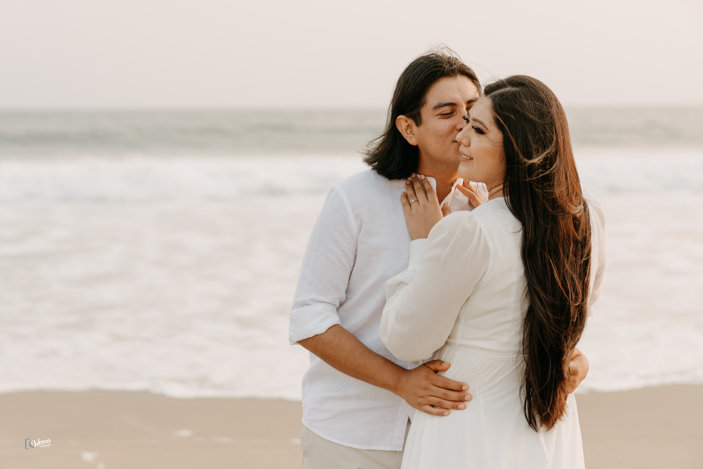
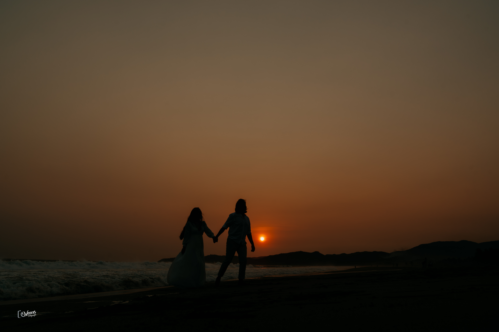

<main>
	<head>
		<!--link rel="stylesheet" href="../../assets/pics/icons/font-awesome-4.7.0/css/font-awesome.min.css"-->
	</head>
	<body>
		<div class="book">
			<div class="book-cover">
				<h1>{{ detailsInfo }}</h1>
				<h1>{{ detailsInfo2 }}</h1>
			</div>
			<div class="book-content">
				<div class="col text-center">
					<h1>{{ title }}</h1>
				</div>


				<div class="col text-center">
					
					<h3> 17:30 hrs </h3>
					<p> La boda por el civil se celebrará </p>
					<p> En el jardin Mar y Arena ubicado en Playa Larga</p>
					<p> CP. 40882 Ixtapa Zihuatanejo, Gro. </p>
					<a href="https://maps.app.goo.gl/oCRxYXhUwLUhdFVG7">
						
					</a>
					<p> Click en el icono para ver ubicación </p>

					<div class="line"></div>
					
					<h3> Comida </h3>
					<p>  Posterior a la boda, los invitamos </p>
					<p>  a degustar los sagrados alimentos </p>

					<div class="line"></div>

					
					<h3> ¡Fiesta Fiesta!</h3>
					<p>  Continuación del festejo </p>

					<div class="line"></div>

					
					<h2> Nota Importante </h2>
					<p> Toma tus precauciones para llegar al Jardin </p>
					<p> Te recordamos que te tomará aproximadamente 35 a 45 mins </p>
					<p> Para llegar de Ixtapa a Playa Larga</p>
					<p> La manera más fácil de moverte es en Taxi </p>
					
					<p> El jardín está ubicado más cerca del aeropuerto </p>
					<p> Que de Zihuatanejo. </p>
					
				</div>
				<!-- carousel -->
				<div id="carouselExample" class="carousel slide" data-bs-ride="carousel" data-bs-interval="3000">
					<div class="carousel-inner">
						<div class="carousel-item active">
							
						</div>
						<div class="carousel-item">
							
						</div>
						<div class="carousel-item">
							
						</div>
					</div>
					<button class="carousel-control-prev" type="button" data-bs-target="#carouselExample" data-bs-slide="prev">
						<span class="carousel-control-prev-icon" aria-hidden="true"></span>
						<span class="visually-hidden">Previous</span>
					</button>
					<button class="carousel-control-next" type="button" data-bs-target="#carouselExample" data-bs-slide="next">
						<span class="carousel-control-next-icon" aria-hidden="true"></span>
						<span class="visually-hidden">Next</span>
					</button>
				</div>

			</div>
		</div>	
	</body>
</main>